pacman::p_load(tmap, sf, tidyverse, spatstat, spNetwork, classInt, viridis,
maptools, raster)Take-home Assignment 01: Discovering geographical distribution of Grab hailing services in Singapore
Background
In this exploration, we investigate the geographical and spatio-temporal distribution of Grab hailing services in Singapore, leveraging the rich dataset provided by GRAB known as Grab Posisi. As a significant shared taxi operator in Southeast Asia, GRAB’s dataset offers a unique perspective on human mobility. This study focuses on applying Spatial Point Pattern Analyses (KDE/NKDE) to discern patterns within the dataset.
Install Packages & Importing Data
Install Necessary Packages
For this exercise, we will be using the following packages:
sf for importing, managing, and processing geospatial data through simple features.
tidyverse for comprehensive data science tasks, including importing, wrangling, and visualizing spatial data.
spatstat for point pattern analysis, offering a wide range of functions for exploring spatial patterns.
spNetwork for analyzing spatial networks and their properties.
classInt for determining class intervals for mapping and visualization purposes.
viridis for providing color maps suitable for creating visually appealing visualizations.
maptools for manipulating geographic data, offering a set of tools for various spatial operations.
raster for reading, writing, manipulating, and analyzing gridded spatial data in a raster format.
Importing Data
GrabPosisi Data (Pick Up Location)
#GrabPosisi Data
origin_df <- read_rds("/dljyuan/IS415-GAA/data/rds/origin_df.rds")
#destination_df <- read_rds("/dljyuan/IS415-GAA/data/rds/destination_df.rds")Boundary Data (Coastal Outline)
mpsz_sf <- st_read(dsn = "../data/geospatial/",
layer="MP14_SUBZONE_WEB_PL")Reading layer `MP14_SUBZONE_WEB_PL' from data source
`C:\dljyuan\IS415-GAA\data\geospatial' using driver `ESRI Shapefile'
Simple feature collection with 323 features and 15 fields
Geometry type: MULTIPOLYGON
Dimension: XY
Bounding box: xmin: 2667.538 ymin: 15748.72 xmax: 56396.44 ymax: 50256.33
Projected CRS: SVY21sg_sf <- mpsz_sf%>%
st_union()
st_geometry(sg_sf)Geometry set for 1 feature
Geometry type: MULTIPOLYGON
Dimension: XY
Bounding box: xmin: 2667.538 ymin: 15748.72 xmax: 56396.44 ymax: 50256.33
Projected CRS: SVY21MULTIPOLYGON (((17763.39 15889.1, 17758.6 15868...sg_sf <- st_make_valid(sg_sf)
length(which(st_is_valid(sg_sf) == FALSE))[1] 0Road Layer Data (Singapore) The following include data from Singapore, Malaysia & Brunei
road <- st_read(dsn="../data/geospatial",
layer="gis_osm_roads_free_1")Convert CRS of Road Data to be the same as the Coastal Outline (SVY21)
road <- st_transform(road, crs = st_crs(sg_sf))
st_geometry(sg_sf)
st_geometry(road)Filter out unnecessary variables
#road <- road[, c("name", "geometry")]
origin_df <- origin_df[, c("trj_id", "rawlat", "rawlng", "accuracy", "weekday", "start_hr", "day")]Extracting road data from Singapore only
singapore_roads <- st_intersection(road, sg_sf)
Write Data for Future Extraction
write_rds(singapore_roads, "/dljyuan/IS415-GAA/data/rds/singapore_roads.rds")Import SG Road Layers
singapore_roads <- read_rds("/dljyuan/IS415-GAA/data/rds/singapore_roads.rds")Data Wrangling
Convert Data CRS to 3414 SVY21
sg_sf <- st_set_crs(sg_sf, 3414)Warning: st_crs<- : replacing crs does not reproject data; use st_transform for
thatsingapore_roads <- st_set_crs(singapore_roads, 3414)Warning: st_crs<- : replacing crs does not reproject data; use st_transform for
thatst_crs(sg_sf)Coordinate Reference System:
User input: EPSG:3414
wkt:
PROJCRS["SVY21 / Singapore TM",
BASEGEOGCRS["SVY21",
DATUM["SVY21",
ELLIPSOID["WGS 84",6378137,298.257223563,
LENGTHUNIT["metre",1]]],
PRIMEM["Greenwich",0,
ANGLEUNIT["degree",0.0174532925199433]],
ID["EPSG",4757]],
CONVERSION["Singapore Transverse Mercator",
METHOD["Transverse Mercator",
ID["EPSG",9807]],
PARAMETER["Latitude of natural origin",1.36666666666667,
ANGLEUNIT["degree",0.0174532925199433],
ID["EPSG",8801]],
PARAMETER["Longitude of natural origin",103.833333333333,
ANGLEUNIT["degree",0.0174532925199433],
ID["EPSG",8802]],
PARAMETER["Scale factor at natural origin",1,
SCALEUNIT["unity",1],
ID["EPSG",8805]],
PARAMETER["False easting",28001.642,
LENGTHUNIT["metre",1],
ID["EPSG",8806]],
PARAMETER["False northing",38744.572,
LENGTHUNIT["metre",1],
ID["EPSG",8807]]],
CS[Cartesian,2],
AXIS["northing (N)",north,
ORDER[1],
LENGTHUNIT["metre",1]],
AXIS["easting (E)",east,
ORDER[2],
LENGTHUNIT["metre",1]],
USAGE[
SCOPE["Cadastre, engineering survey, topographic mapping."],
AREA["Singapore - onshore and offshore."],
BBOX[1.13,103.59,1.47,104.07]],
ID["EPSG",3414]]st_crs(singapore_roads)Coordinate Reference System:
User input: EPSG:3414
wkt:
PROJCRS["SVY21 / Singapore TM",
BASEGEOGCRS["SVY21",
DATUM["SVY21",
ELLIPSOID["WGS 84",6378137,298.257223563,
LENGTHUNIT["metre",1]]],
PRIMEM["Greenwich",0,
ANGLEUNIT["degree",0.0174532925199433]],
ID["EPSG",4757]],
CONVERSION["Singapore Transverse Mercator",
METHOD["Transverse Mercator",
ID["EPSG",9807]],
PARAMETER["Latitude of natural origin",1.36666666666667,
ANGLEUNIT["degree",0.0174532925199433],
ID["EPSG",8801]],
PARAMETER["Longitude of natural origin",103.833333333333,
ANGLEUNIT["degree",0.0174532925199433],
ID["EPSG",8802]],
PARAMETER["Scale factor at natural origin",1,
SCALEUNIT["unity",1],
ID["EPSG",8805]],
PARAMETER["False easting",28001.642,
LENGTHUNIT["metre",1],
ID["EPSG",8806]],
PARAMETER["False northing",38744.572,
LENGTHUNIT["metre",1],
ID["EPSG",8807]]],
CS[Cartesian,2],
AXIS["northing (N)",north,
ORDER[1],
LENGTHUNIT["metre",1]],
AXIS["easting (E)",east,
ORDER[2],
LENGTHUNIT["metre",1]],
USAGE[
SCOPE["Cadastre, engineering survey, topographic mapping."],
AREA["Singapore - onshore and offshore."],
BBOX[1.13,103.59,1.47,104.07]],
ID["EPSG",3414]]tmap_mode('plot')
tm_shape(singapore_roads) +
tm_lines()
tmap_mode('plot')Convert Latitude & Longtitude to Cartisians
origin_df <- st_as_sf(origin_df,
coords = c("rawlng", "rawlat"),
crs=4326) %>%
st_transform(crs = 3414)st_geometry(origin_df)
tmap_mode('plot')
tm_shape(sg_sf) +
tm_polygons() +
tm_shape(origin_df) +
tm_dots()
Convert to Spatial Class
origin <- as_Spatial(origin_df)
sg <- as_Spatial(sg_sf)
#singapore_roads <- as_Spatial(singapore_roads)Convert to Spatial Object
origin_sp <- as(origin, "SpatialPoints")
sg_sp <- as(sg, "SpatialPolygons")Convert to ppp Object
origin_ppp <- as(origin_sp, "ppp")Check for duplicate or overlap points
tm_shape(sg_sf) +
tm_polygons() +
tm_shape(origin) +
tm_dots(alpha=0.4,
size=0.02)
any(duplicated(origin_ppp))[1] FALSEsum(multiplicity(origin_ppp) > 1)[1] 0Convert to owin Object
sg_owin <- as(sg_sp, "owin")Combine Grabposisi Data with Coastal Outline
origin_ppp = origin_ppp[sg_owin]
plot(origin_ppp)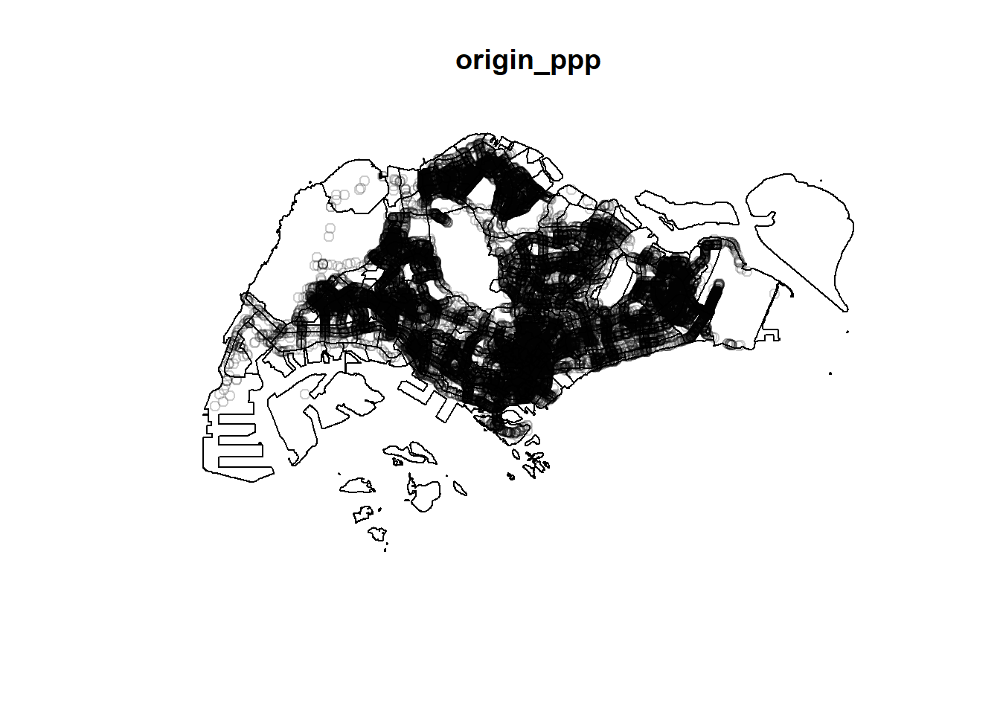
Exploratory Data Analysis
Kernel Density Estimation (KDE)
# Convert data to km as our unit of measurement
origin_ppp.km <- rescale(origin_ppp, 1000, "km")Selecting Kernel Method
Baddeley et. (2016) suggested the use of the bw.ppl() algorithm because in ther experience it tends to produce the more appropriate values when the pattern consists predominantly of tight clusters. But they also insist that if the purpose of once study is to detect a single tight cluster in the midst of random noise then the bw.diggle() method seems to work best.
par(mfrow=c(1,2))
plot(density(origin_ppp.km,
sigma=bw.diggle,
edge=TRUE,
kernel="gaussian"),
main = "bw.diggle")
plot(density(origin_ppp.km,
sigma=bw.ppl,
edge=TRUE,
kernel="gaussian"),
main = "bw.ppl")
The map bw.ppl might show sharper contrasts and potentially reveal more nuanced clusters or patterns in the point distribution compared to the bw.diggle map.
par(mfrow=c(2,2))
plot(density(origin_ppp.km,
sigma=bw.ppl,
edge=TRUE,
kernel="gaussian"),
main="Gaussian")
plot(density(origin_ppp.km,
sigma=bw.ppl,
edge=TRUE,
kernel="epanechnikov"),
main="Epanechnikov")
plot(density(origin_ppp.km,
sigma=bw.ppl,
edge=TRUE,
kernel="quartic"),
main="Quartic")
plot(density(origin_ppp.km,
sigma=bw.ppl,
edge=TRUE,
kernel="disc"),
main="Disc")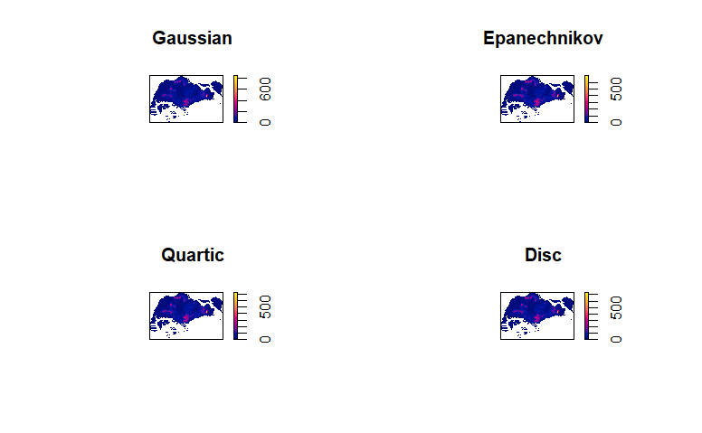 While the four KDE maps exhibit overall similarities, closer inspection reveals subtle differences in density patterns. For this analysis we will utilize the Gaussian kernel for this analysis.
kde_origin.ppl <- density(origin_ppp.km,
sigma=bw.ppl,
edge=TRUE,
kernel="gaussian")Comparing Fixed & Adaptive KDE
kde_origin_adaptive <- adaptive.density(origin_ppp.km, method="kernel")
par(mfrow=c(1,2))
plot(kde_origin.ppl, main = "Fixed bandwidth")
plot(kde_origin_adaptive, main = "Adaptive bandwidth")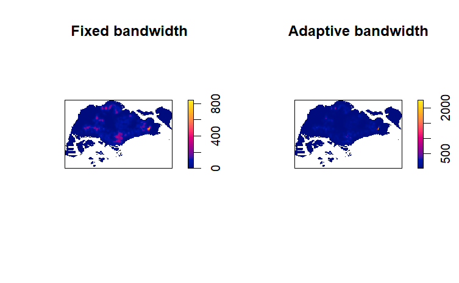 Based on visual analysis of the KDE maps, fixed bandwidth will produce a more accurate and interpretable representation of the underlying data distribution as compared to adaptive bandwidth.
Converting KDE into grid object
gridded_kde_origin_ppl <- as.SpatialGridDataFrame.im(kde_origin.ppl)
kde_origin_ppl_raster <- raster(gridded_kde_origin_ppl)
projection(kde_origin_ppl_raster) <- CRS("+init=EPSG:3414")Visualising Output Map
tm_shape(kde_origin_ppl_raster) +
tm_raster("v", palette = "YlGnBu", title="") +
tm_layout(
legend.position = c("right", "bottom"),
main.title = "Pick Up Points Density",
frame = FALSE)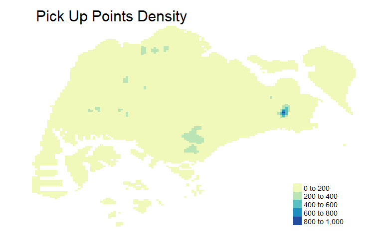
The map reveals several distinct clusters of high-density points, particularly concentrated in the southeastern and southern quadrants. These clusters could be further analyzed by dividing them into five distinct regions.
Network Kernel Density Estimation (NKDE)
The five high-density regions identified in the standard KDE analysis will be the focus of network kernel density estimation. This will leverage the network’s inherent connections and potentially uncover deeper insights and relationships within these areas.
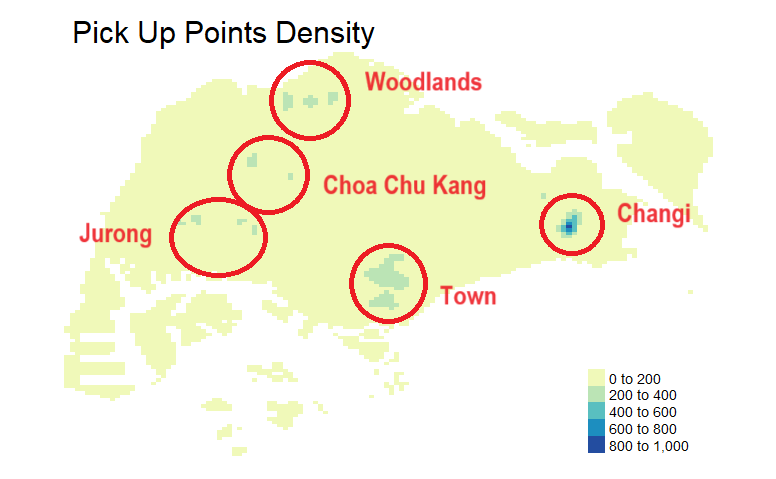 Retrieving the five study areas Changi
ch <- mpsz_sf %>%
filter(PLN_AREA_N == "CHANGI")
ch <- ch%>%
st_union()
ch <- st_make_valid(ch)
length(which(st_is_valid(ch) == FALSE))[1] 0Town
town <- mpsz_sf %>%
filter(CA_IND == "Y")
town <- town%>%
st_union()
town <- st_make_valid(town)
length(which(st_is_valid(town) == FALSE))[1] 0Woodlands
wood <- mpsz_sf %>%
filter(PLN_AREA_N == "WOODLANDS")
wood <- wood%>%
st_union()
wood <- st_make_valid(wood)
length(which(st_is_valid(wood) == FALSE))[1] 0Choa Chu Kang
cck_bp <- mpsz_sf %>%
filter(PLN_AREA_N %in% c("CHOA CHU KANG","BUKIT PANJANG"))
cck_bp <- cck_bp%>%
st_union()
cck_bp <- st_make_valid(cck_bp)
length(which(st_is_valid(cck_bp) == FALSE))[1] 0Jurong
jg <- mpsz_sf %>%
filter(PLN_AREA_N %in% c("JURONG WEST","JURONG EAST","CLEMENTI"))
jg <- jg%>%
st_union()
jg <- st_make_valid(jg)
length(which(st_is_valid(jg) == FALSE))[1] 0Converting to SVY21 3414
ch <- st_transform(ch, crs = 3414)
town <- st_transform(town, crs = 3414)
wood <- st_transform(wood, crs = 3414)
cck_bp <- st_transform(cck_bp, crs = 3414)
jg <- st_transform(jg, crs = 3414)Extracting the road layers for each individual area
ch_roads <- st_intersection(singapore_roads, ch)
town_roads <- st_intersection(singapore_roads, town)
wood_roads <- st_intersection(singapore_roads, wood)
cck_bp_roads <- st_intersection(singapore_roads, cck_bp)
jg_roads <- st_intersection(singapore_roads, jg)Visualising the extract spatial data
par(mfrow=c(2,3))
plot(ch, main = "Changi Area")
plot(town, main = "Town Area")
plot(wood, main = "Woodlands Area")
plot(cck_bp, main = "Choa Chu Kang Area")
plot(jg, main = "Jurong Area")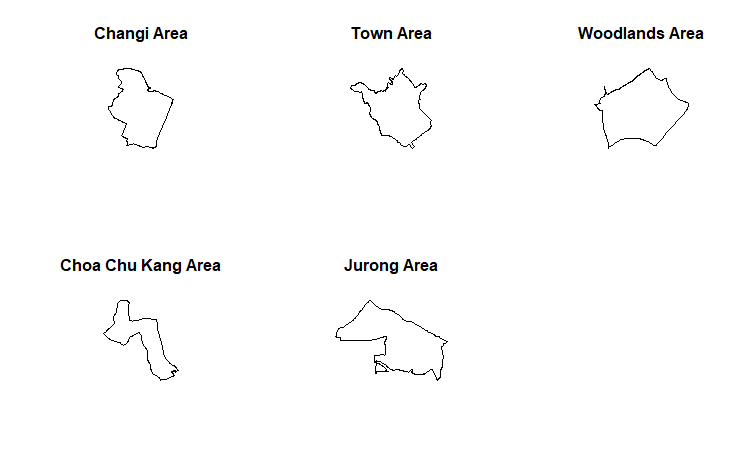
-
Changi
-
Town
-
Woodlands
-
Choa Chu Kang
-
Jurong
Changi Area
plot(ch_roads)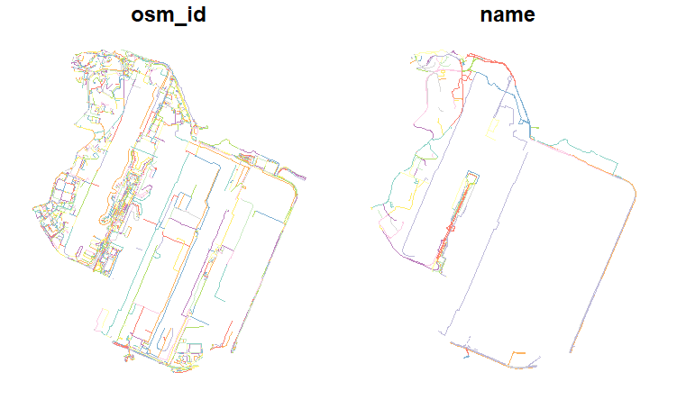
Town Area
plot(town_roads)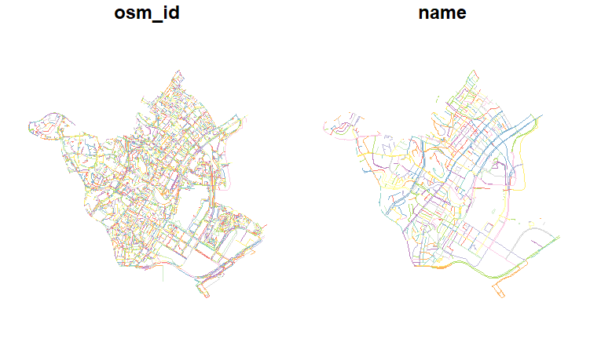
Woodlands Area
plot(wood_roads)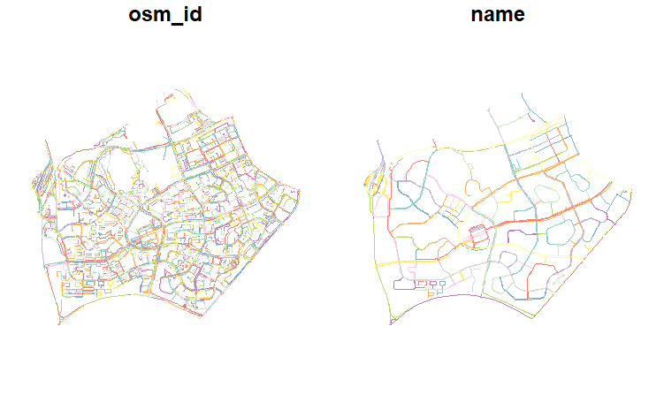
Choa Chu Kang Area
plot(cck_bp_roads)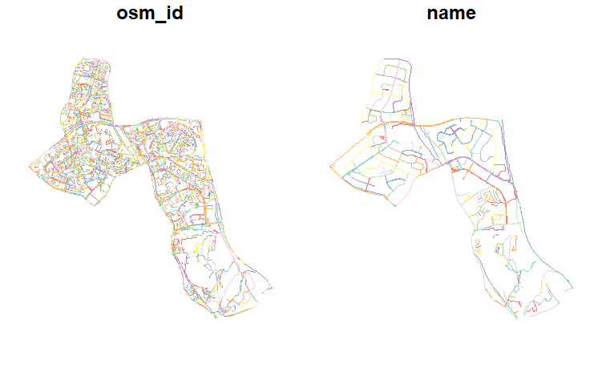
Jurong Area
plot(jg_roads)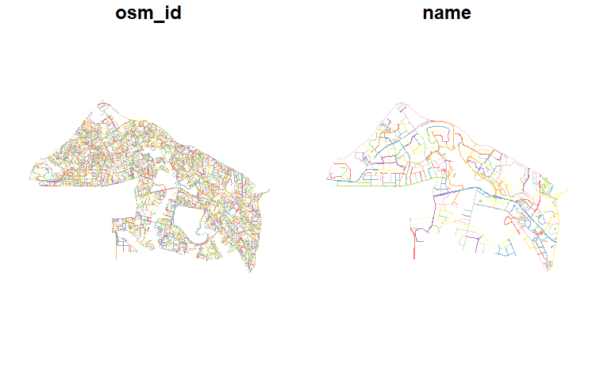
tmap_arrange(tm_shape(ch_roads) +
tm_lines(col = "red") +
tm_layout(title = "Changi", title.size = 0.8),
tm_shape(town_roads) +
tm_lines(col = "blue") +
tm_layout(title = "Town", title.size = 0.8),
tm_shape(wood_roads) +
tm_lines(col = "green") +
tm_layout(title = "Woodlands", title.size = 0.8),
tm_shape(cck_bp_roads) +
tm_lines(col = "orange") +
tm_layout(title = "Choa Chu Kang", title.size = 0.8),
tm_shape(jg_roads) +
tm_lines(col = "purple") +
tm_layout(title = "Jurong", title.size = 0.8),
asp=2, ncol=3)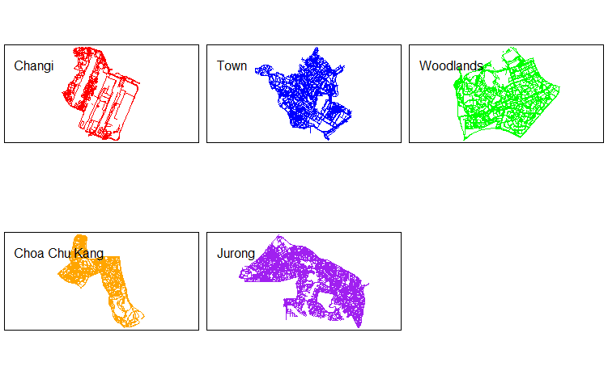
Converting the geometry format to linestring.
ch_roads <- st_cast(ch_roads, "LINESTRING")
town_roads <- st_cast(town_roads, "LINESTRING")
wood_roads <- st_cast(wood_roads, "LINESTRING")
cck_bp_roads <- st_cast(cck_bp_roads, "LINESTRING")
jg_roads <- st_cast(jg_roads, "LINESTRING")Preparing lixels object & generating line centre points
lixels_ch <- lixelize_lines(ch_roads,
700,
mindist = 350)
lixels_town <- lixelize_lines(town_roads,
700,
mindist = 350)
lixels_wood <- lixelize_lines(wood_roads,
700,
mindist = 350)
lixels_cck_bp <- lixelize_lines(cck_bp_roads,
700,
mindist = 350)
lixels_jg <- lixelize_lines(jg_roads,
700,
mindist = 350)Retrieving the pickup points for each study area
samples_ch <- lines_center(lixels_ch)
samples_town <- lines_center(lixels_town)
samples_wood <- lines_center(lixels_wood)
samples_cck_bp <- lines_center(lixels_cck_bp)
samples_jg <- lines_center(lixels_jg)origin_ch = st_intersection(origin_df, ch)
origin_town = st_intersection(origin_df, town)
origin_wood = st_intersection(origin_df, wood)
origin_cck_bp = st_intersection(origin_df, cck_bp)
origin_jg = st_intersection(origin_df, jg)Performing NetKDE
# This code is repeated for the remaining 5 area except the variables for [lines, events, w & samples]
densities <- nkde(ch_roads,
events = origin_ch,
w = rep(1,nrow(origin_ch)),
samples = samples_ch,
kernel_name = "quartic",
bw = 300,
div= "bw",
method = "simple",
digits = 1,
tol = 1,
grid_shape = c(1,1),
max_depth = 8,
agg = 5, #we aggregate events within a 5m radius (faster calculation)
sparse = TRUE,
verbose = FALSE)
samples_ch$density <- densities*1000
lixels_ch$density <- densities*1000-
Changi
-
Town
-
Woodlands
-
Choa Chu Kang
-
Jurong
tmap_mode('plot')
tm_shape(lixels_ch)+
tm_lines(col="density")+
tm_shape(origin_ch)+
tm_dots()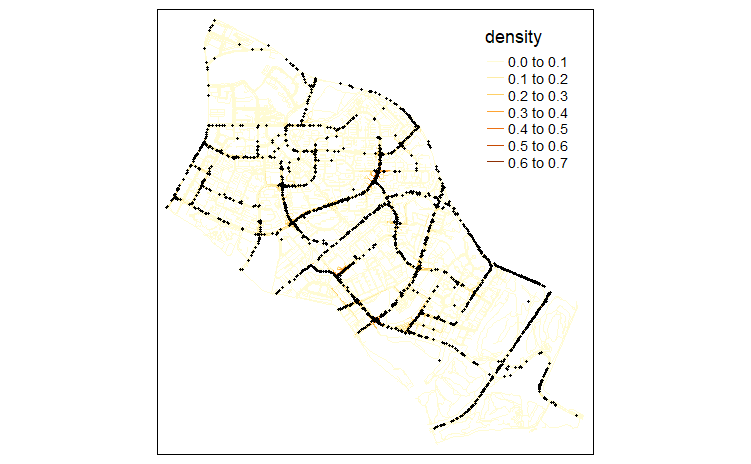
tmap_mode('plot')
tm_shape(lixels_town)+
tm_lines(col="density")+
tm_shape(origin_town)+
tm_dots()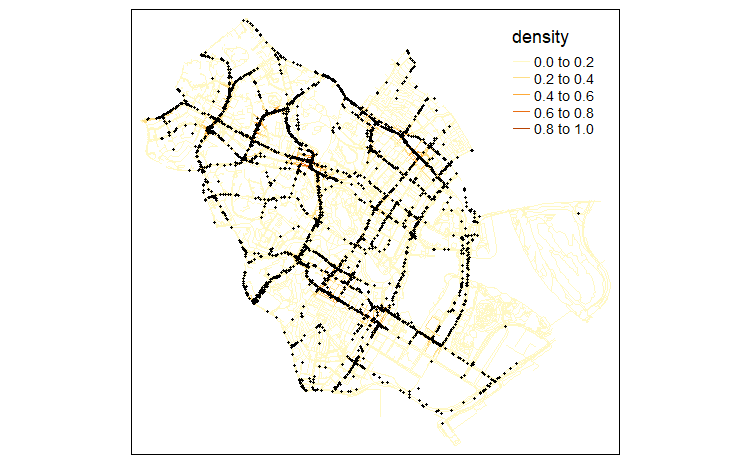
tmap_mode('plot')
tm_shape(lixels_wood)+
tm_lines(col="density")+
tm_shape(origin_wood)+
tm_dots()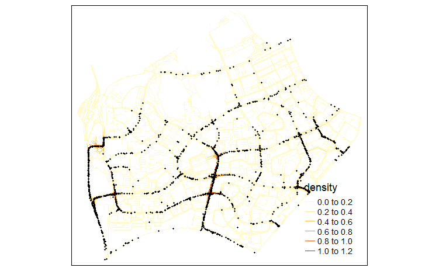
tmap_mode('plot')
tm_shape(lixels_cck_bp)+
tm_lines(col="density")+
tm_shape(origin_cck_bp)+
tm_dots()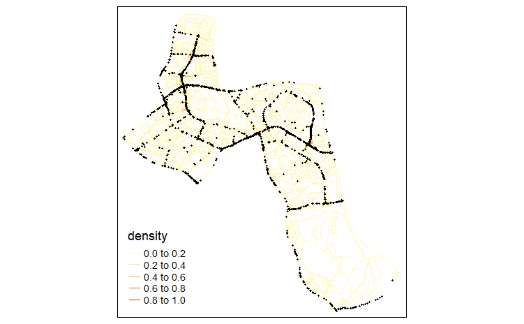
tmap_mode('plot')
tm_shape(lixels_jg)+
tm_lines(col="density")+
tm_shape(origin_jg)+
tm_dots()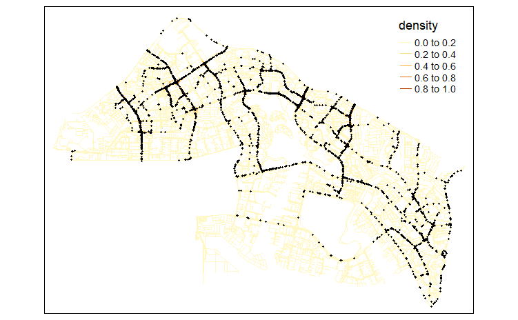
Note
Considering the large number/size of data points, Woodlands NetKDE visualization will be the sole area depicted on the OpenStreetMap of Singapore.